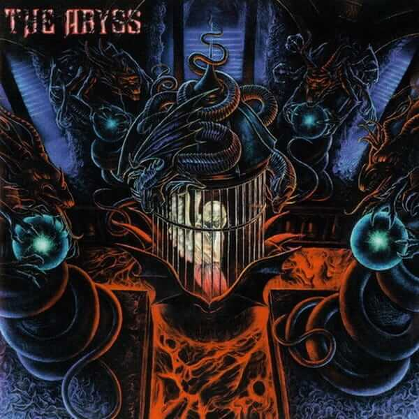

The Abyss - The Other Side
El segmento de joyas olvidadas.
Quería hacer mi primer post en Substack sobre joyas perdidas en el tiempo o que fueron muy poco valoradas. Escuchando esta tarde algo de Black Metal sueco, recordé a The Abyss, un proyecto de Black Metal orquestado desde la mente del genio Peter Tägtgren, acompañado por sus compañeros de Hypocrisy, Mikael Hedlund y Lars Szöke. Este proyecto nació en 1994, en pleno auge del Black Metal, un año en el que muchos álbumes icónicos del género marcaron la escena.

En 1995, desde la cripta de Abyss Studio y bajo el sello Nuclear Blast Records, salió a la luz un disco que, para muchos, es una obra de arte, pero que el tiempo ha dejado en el olvido. Se trata de The Other Side, la placa inicial de la trayectoria de esta banda.
Este disco cuenta con un total de 8 temas, incluyendo un cover de Hellhammer ("Massacra"). Desde el primer tema, destaca un sonido muy limpio, característico de las producciones del señor Tägtgren, donde resplandecen las melodías de guitarra, siendo una pieza indiscutible del Black Metal sueco. A diferencia de Hypocrisy, las guitarras están a cargo de Lars Szöke y Mikael Hedlund, mientras que Peter Tägtgren se ocupa del bajo y la batería. Los tres músicos participan en las voces, logrando desgarradoras armonías que encajan perfectamente con la atmósfera del disco.
Siempre que me encanta un disco, siento que es demasiado corto, aunque no necesariamente lo sea. Sin embargo, en esta ocasión no me equivoco. Mi única crítica es que este álbum es muy, pero muy corto, con poco menos de 30 minutos de duración, y la última canción es instrumental, más ruido y atmósfera que otra cosa.
En 1996, llegaría un segundo disco llamado Summon the Beast, que no logró la misma calidad ni el impacto que tuvo su primer álbum. Tras un par de años, este proyecto regresó a las sombras, desapareciendo por completo y dejando espacio para el proyecto principal Hypocrisy.